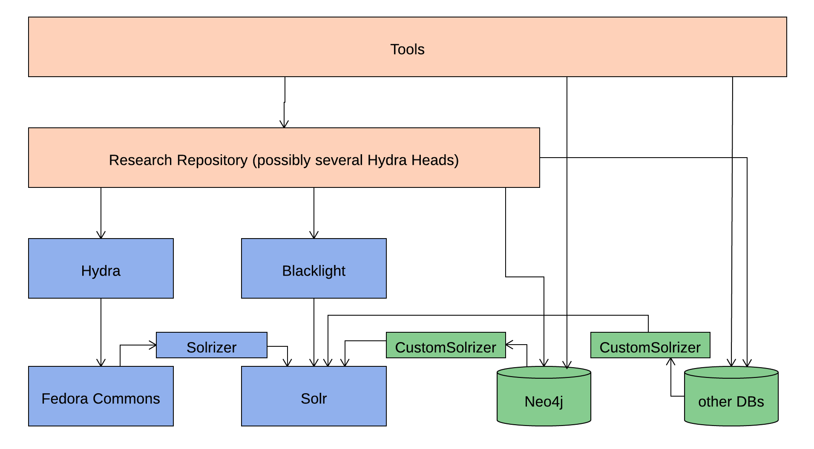

A Hydra Repository
This page describes the development efforts of the IHR Nexus Lab at ASU to develop a resesarch repository. The repository is based on the Hydra framework and the Sufia Hydra head. You can find our ticket tracker here.
The anticipated architecture of the system is shown in the following diagram.
This page is work in progress. More info on the project will follow soon. In the meantime, if you're interested check out our GitHub repository or contact us with questions.